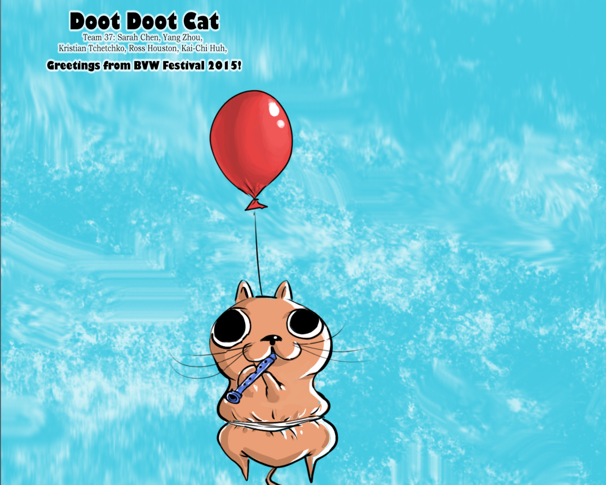
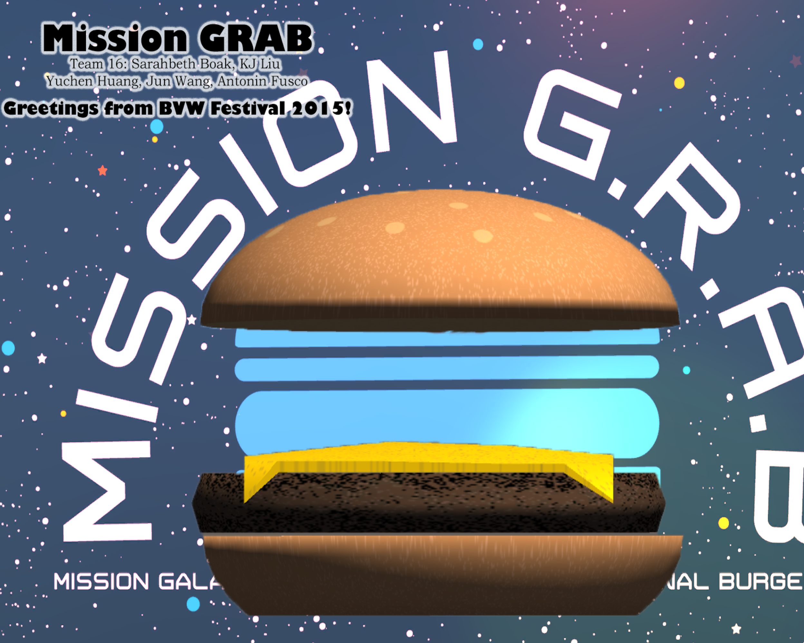
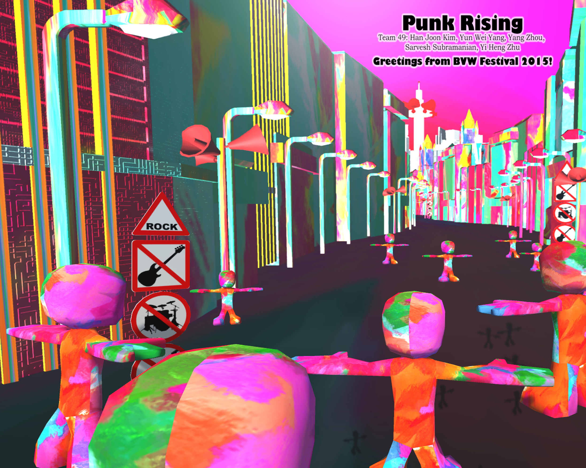
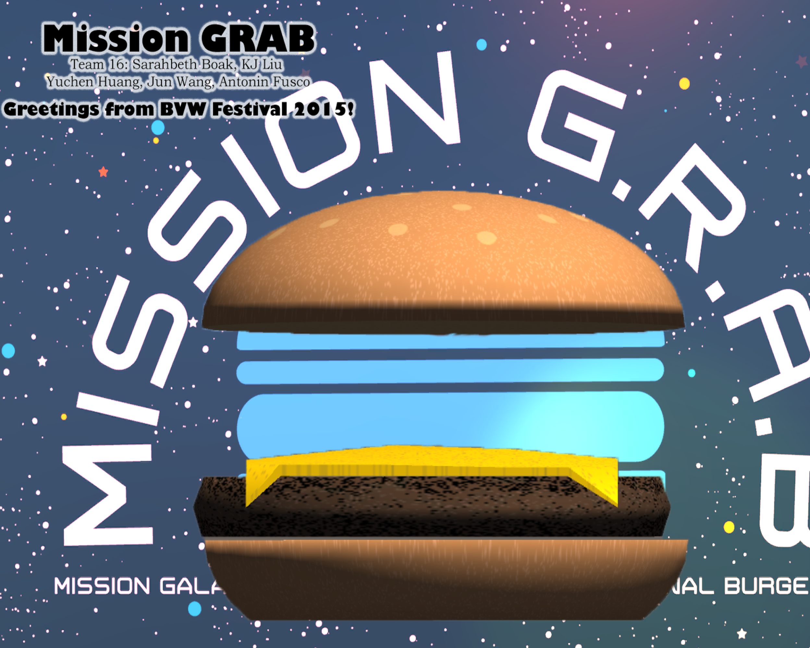
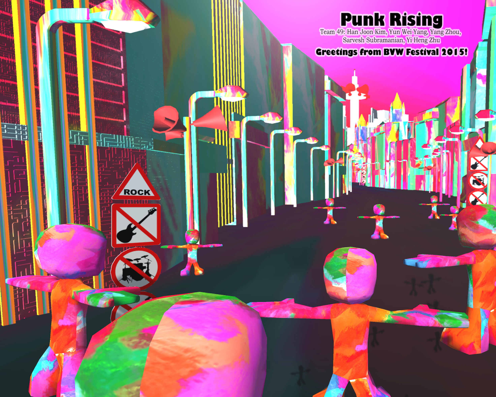

BVW Photobooth
Demo Videos
What is BVW Photobooth?
BVW Photobooth is an interactive Kinect 2 experience developed in three weeks. Our team selected seven scenes from courses projects (Building Virturl World), and added interactive elements to these scenes. Players can choose either scene to start with, and experience different interactivties. Four photos will be taken in each scene, and we will genereate animated photos(.gif) for the players in real-time. We also have a web site to show all photos. Players will get a code at the end of this experience. With the code, they can go to the web site to download, share on Facebook or email their photos. Click HERE to check the showcase website. *All photos are collected during 2015 BVW Festival.

Implementation
BVW Photobooth is developed with Kinect 2 and Unity3D. We used Kinect 2 to detect players, and removed background inorder to cut players' figures. We added virtual props in each scene for players to play, and we also have some physical props. For each scene, four photos will be taken one by one. All the photos will be automatically uploaded to the server and be generated into a gif. We have a auto refresh website to show all results photos. Players can check their photos once they finished photoing. We also created a WEBSITE for players to download, share and email their photos.
Teamwork
Our team has five members, including two programmers, two artists and one sound designer. I am one of the programmers, and my responsibilities in this project including:
>> Used Kinect 2 to detect players, and remove backgrounds
>> Added interactive elements(e.g. virtual props) to the scenes
>> Implemented the game system, including figure detection, file uploading, gif generating and email system.
>> Worked on server-side, and created website to display all results photos
>> Created website for players to download, share and email their photos
Scene Selection

 


